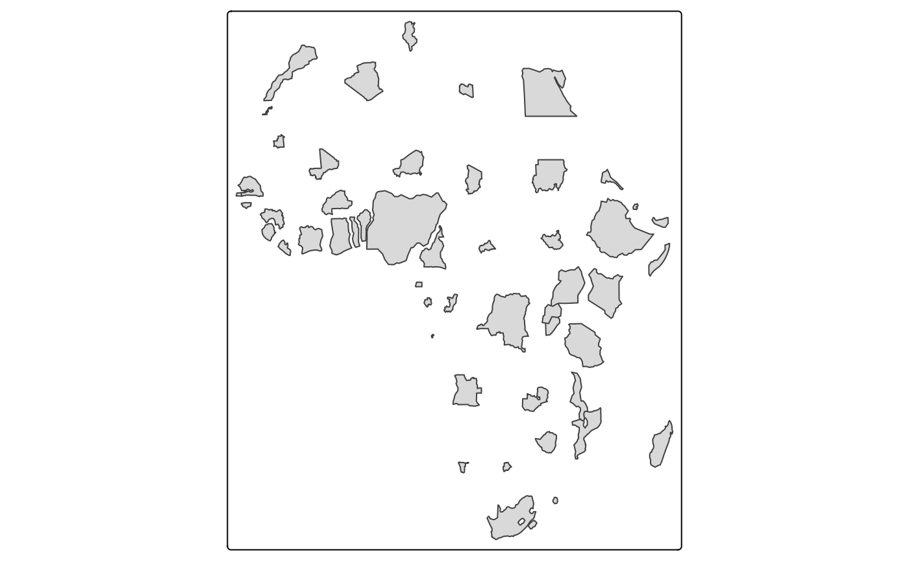
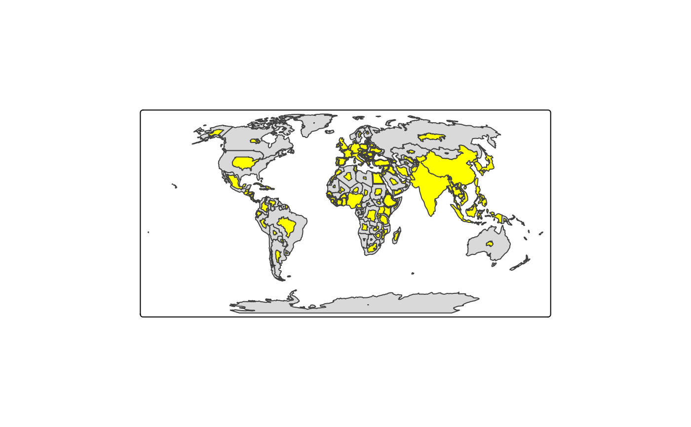

Map layer that draws a cartogram. See details for types. It is recommended to specify a proper crs in [tmap::tm_shape()].
Usage
tm_cartogram(
size = 1,
size.scale = tmap::tm_scale(),
size.legend = tmap::tm_legend_hide(),
size.chart = tmap::tm_chart_none(),
size.free = NA,
plot.order = tmap::tm_plot_order("size", reverse = FALSE),
options = opt_tm_cartogram(),
...
)
tm_cartogram_ncont(
size = 1,
size.scale = tm_scale(),
size.legend = tm_legend_hide(),
size.chart = tm_chart_none(),
size.free = NA,
plot.order = tm_plot_order("size", reverse = FALSE),
options = opt_tm_cartogram_ncont(),
...
)
tm_cartogram_dorling(
size = 1,
size.scale = tm_scale(),
size.legend = tm_legend_hide(),
size.chart = tm_chart_none(),
size.free = NA,
plot.order = tm_plot_order("size", reverse = FALSE),
options = opt_tm_cartogram_dorling(),
...
)
opt_tm_cartogram(type = "cont", itermax = 15, ...)
opt_tm_cartogram_ncont(type = "ncont", expansion = 1, inplace = FALSE, ...)
opt_tm_cartogram_dorling(type = "dorling", share = 5, itermax = 1000, ...)Arguments
- size, size.scale, size.legend, size.chart, size.free
Visual variable that specifies the polygon sizes.
- plot.order
Specification in which order the spatial features are drawn. See [tmap:tm_plot_order()] for details.
- options
passed on to the corresponding `opt_<layer_function>` function
- ...
arguments passed on to [cartogram::cartogram_cont()]
- type
cartogram type, one of: "cont" for contiguous cartogram, "ncont" for non-contiguous cartogram and "dorling" for Dorling cartograms
- itermax,
maximum number of iterations (see [cartogram::cartogram_cont()])
- expansion
factor expansion, see [cartogram::cartogram_ncont()] (argument `k`)
- inplace
should each polygon be modified in its original place? (`TRUE` by default)
share of the bounding box filled with the larger circle (see [cartogram::cartogram_dorling()] argument `k`)
Value
a [tmap::tmap-element], supposed to be stacked after [tmap::tm_shape()] using the `+` operator. The `opt_<layer_function>` function returns a list that should be passed on to the `options` argument.
Details
In the contiguous cartogram polygons are distorted where the geographic relations are maintained. The algorithm by Dougenik et al. (1985) is used via [cartogram::cartogram_cont()].
In the non-contiguous cartogram polygons are resized only. The used algorithm has been proposed by Olson (1976) and implemented in [cartogram::cartogram_ncont()].
The Dorling cartogram (Dorling, 1996) generates proportional bubbles and is implemented in [cartogram::cartogram_dorling()].
References
Dougenik, J. A., Chrisman, N. R., & Niemeyer, D. R. (1985). An Algorithm To Construct Continuous Area Cartograms. In The Professional Geographer, 37(1), 75-81.
Olson, J. M. (1976). Noncontiguous Area Cartograms. In The Professional Geographer, 28(4), 371-380.
Dorling, D. (1996). Area Cartograms: Their Use and Creation. In Concepts and Techniques in Modern Geography (CATMOG), 59.
Examples
library(tmap)
Africa = World[World$continent == "Africa", ]
tm_shape(Africa, crs = "+proj=robin") +
tm_cartogram_ncont(size = "pop_est", options = opt_tm_cartogram_ncont())
#> Cartogram in progress...

# \donttest{
tm_shape(Africa, crs = "+proj=robin") +
tm_cartogram(size = "pop_est", options = opt_tm_cartogram(itermax = 15))
#> Cartogram in progress...
tm_shape(World, crs = "+proj=robin") +
tm_polygons() +
tm_cartogram_ncont(size = "pop_est", fill = "yellow")
#> Cartogram in progress...

# with animation
tm_shape(Africa, crs = "+proj=robin") +
tm_cartogram(
size = "*pop_est",
fill = "footprint", options = opt_tm_cartogram(itermax = 15))
#> Error in tm_polygons(): Visual values used for the variable "size" are incorrect.
#> ℹ Variable should be a data variable name or a numeric value.
# }